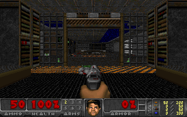

PROOF THEATER / NATIVE ENGINE
Inside CombatV2.
Play Alaska Hoffman's Lean port with the proof project's walking and enemy rules. The worker renders each camera frame on your own computer.
MAP LOADER
Ordinary spawn
Live theorem candidate

This still was rendered by the same engine used by the local player.
Start the local player
Unpack the verification kit, install Lean's toolchain manager, then run the following in the extracted folder. Supply your licensed IWAD or the IWAD from Freedoom: Phase 1.
cd combat lake build map-player cd .. python3 play.py /path/to/doom1.wad
Run coverage
This player runs frozen CombatV2 on the map groups in your local IWAD. It has whole-passage proofs for Hangar, Nuclear Plant, Computer Station and Military Base. The other original episode maps use named Lean engine revisions. Each film starts from its own ordinary spawn. Connecting the secret transition and carrying inventory across the entire episode remain open. Watch all nine passages · Reproduce an engine revision.
W S move · A D strafe · ← → turn · Space use · Ctrl attack · Shift run · 1–3 weapon · Esc pause.